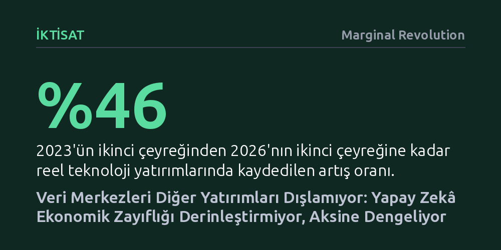

IKTISAT · Marginal Revolution · 2026-10-20
Veri merkezleri ve yapay zekâ harcamaları diğer sektörlerin yatırımlarını dışlamıyor; reel faizlerdeki artış bu yatırımlardan önce gerçekleşti. Teknoloji dışındaki yatırımların yavaşlaması dışlama etkisinden değil; gümrük vergileri, belirsizlikler ve sönümlenen kamu teşviklerinden kaynaklanıyor.
Yapay zekâ yatırımlarının diğer sektörlerden sermaye çalarak ekonomiye zarar verdiği anlatısını çürüterek, reel yatırım sorunlarının asıl kaynağını gösterir.

Son dönemde kamuoyunda ve ekonomi basınında sıkça dillendirilen bir iddia var: Yapay zekâ ve veri merkezlerine aktarılan devasa sermaye, ekonomideki diğer tüm sektörlerin yatırımlarını boğuyor ve onları piyasadan dışlıyor. Ancak bu tezin temel verilerine yakından bakıldığında, basit bir aritmetik tutarsızlık hemen göze çarpıyor. Yıllık bazda yaklaşık 51 milyar dolarlık veri merkezi inşaat harcamasının, ekonomi genelinde 120 milyar dolarlık diğer yatırımı tek başına piyasadan süpürdüğünü öne sürmek iktisadi gerçeklerle uyuşmuyor.
Tartışmayı alevlendiren grafiklerde teknoloji harcamaları ile diğer sektörlerin yatırımları karşılaştırılıyor; fakat kullanılan büyüklükler arasında ciddi bir ölçek farkı bulunuyor. Paul Krugman gibi iktisatçılar, veri merkezlerine yönelik tepkileri arkalarına alarak tüm teknoloji harcamalarını kapsayan çok daha geniş bir toplamı (yaklaşık 539 milyar dolar) tartışmaya dahil ediyor. Bu durum, veri merkezlerine dönük yerel hoşnutsuzluklar üzerinden genel teknoloji yatırımlarına haksız bir dışlama faturası kesilmesine yol açıyor.
İktisat kuramında "dışlama etkisi" (crowding-out) terimi, biçimsel olarak benzer görünse de geleneksel olarak kamu borçlanması için kullanılır. Devlet piyasadan borçlandığında bir piyasa verimliliği testine tabi tutulmaz; bu nedenle kamu açıkları faizleri artırdığında özel sektör yatırımlarını verimsizce dışladığı kabul edilir ve bunun toplumsal bir maliyeti olduğu vurgulanır.
Oysa özel sektörün kendi kaynaklarıyla ya da borçlanarak yaptığı yatırımlar doğrudan piyasa testine tabidir. Özel borçlanma bağlamında sermayenin bir alandan diğerine kayması, fonların daha düşük getirili veya daha az değer üreten alanlardan daha yüksek değer vaat eden alanlara akması anlamına gelir. Dolayısıyla serbest piyasada sermayenin yapay zekâ ve veri merkezlerine yönelmesi bir felaket değil, sermaye dağılım mekanizmasının doğal ve verimli bir sonucudur.
Veri merkezlerinin diğer sektörleri dışladığı iddiasının en zayıf halkası zamanlama tutarsızlığıdır. Bu iddia, yapay zekâ yatırımlarının faizleri aşırı yükselterek diğer şirketlerin borçlanmasını engellediği varsayımına dayanır. Ancak verilere bakıldığında reel faizlerdeki en büyük sıçramanın yapay zekâ patlamasından çok önce gerçekleştiği görülür. ABD'de 10 yıllık enflasyona endeksli tahvil (TIPS) getirileri, 2021 sonundaki -%1,00 seviyesinden 2022 sonunda %1,49'a fırlamıştır; yapay zekâ yatırımlarının tırmandığı dönemde ise faizlerdeki artış sadece yarım puan civarında kalmıştır.
Üstelik mevcut reel faizlerin yüzde 2 ila 3 bandında seyretmesi, tarihsel ortalamalarla tamamen uyumludur ve kârlı projelerin finansmanını engelleyecek caydırıcı bir düzeyde değildir. 2023'ün ikinci çeyreğinden 2026'nın ikinci çeyreğine kadar reel teknoloji yatırımları yüzde 46 artarken, diğer reel yatırımlar da yüzde 3 büyümüştür. Diğer yatırımların 2024 zirvesinden sonra bir miktar zayıfladığı doğru olsa da başlangıç seviyesinin üzerinde kalmaya devam etmektedir. Bu durum mutlak bir dışlama olmadığını net biçimde kanıtlar.
Teknoloji dışındaki yatırımlarda görülen ivme kaybının arkasında dışlama etkisi değil, somut iktisadi engeller yatmaktadır. Küresel ölçekte artan gümrük tarifeleri, ticaret gerilimleri, regülasyon belirsizlikleri ve Biden dönemine ait CHIPS ile IRA sübvansiyonlarının etkisini yitirmesi sanayi ve imalat yatırımlarını yavaşlatmıştır. Yani reel yatırımları frenleyen unsur yapay zekânın sermayeyi yutması değil, makroekonomik ve politik rüzgarlardır.
Sonuç olarak veri merkezleri ve yapay zekâ harcamaları diğer yatırımların önünü kesmemekte, tam tersine durgunlaşma eğilimindeki bir ekonomiye dinamizm kazandırmaktadır. Yazarın vurguladığı gibi, "yapay zekâ yatırımları diğer yatırımları dışlamak bir yana, aksi halde çok daha olumsuz seyredebilecek bir ekonomideki en parlak noktadır."